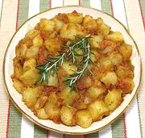

|
Potatoes with TomatoesItaly - Patate al Pomodoro | ||||
| Makes: Effort: Sched: DoAhead: |
2-1/2 # ** 1-1/4 hr Yes |
A delicious dish of lightly fried potatoes with tomatoes for sauce. Easy to make on the stove top and even easier in an electric skillet (11x11 inch for 1 recipe, 11x16 inch for a double recipe). | |||
|
|
2-1/2 6 14oz 1/4 1/4 1 1/3 1/2 |
# oz can c c t t t |
Potatoes (1) Onion Tomatoes Butter Olive Oil Salt Pepper Rosemary (2) |
If serving buffet style, make plenty, it'll be popular. Prep - (25 min)
|